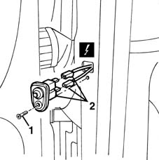

7040E66 courtesy light switch (one) on front door compartment - r+r
- Path
- Procedures > 70 FITTINGS > 7040 BODYSHELL INTERIOR TRIMS AND FITTINGS > 7040E interior courtesy light system > 7040E66 courtesy light switch (one) on front door compartment - r+r
- Kind
- repair procedure (removal / refitting; the operation number is the code)
- Applies to
- all engines; all production periods
- Interactive page
- https://sloeber94.github.io/elrnDB-fMltpl/en/#/2892190
Applies to: all engines; all production periods
 Removing
Removing
 Refitting
Refitting1. Open the front door and undo the bolt.
2. Gently disconnect the switch and disconnect the electrical connections.
 | Name | Connector |
|---|---|---|
2 | Switch on front door lh |
| Name | Connector |
|---|---|---|
2 | Switch on front door rh |

Applies to: all engines; all production periods
Refitting
RemovingCheck that the switch is undamaged.
Connect the electrical connections.
Fit the switch and tighten the screw.
Check that the courtesy lights are working.